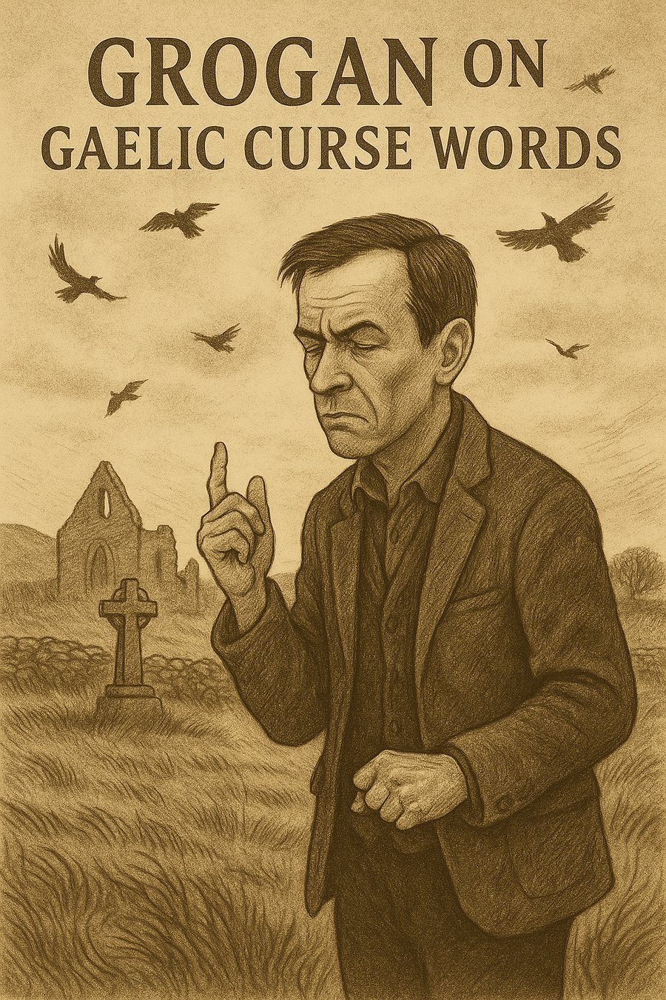
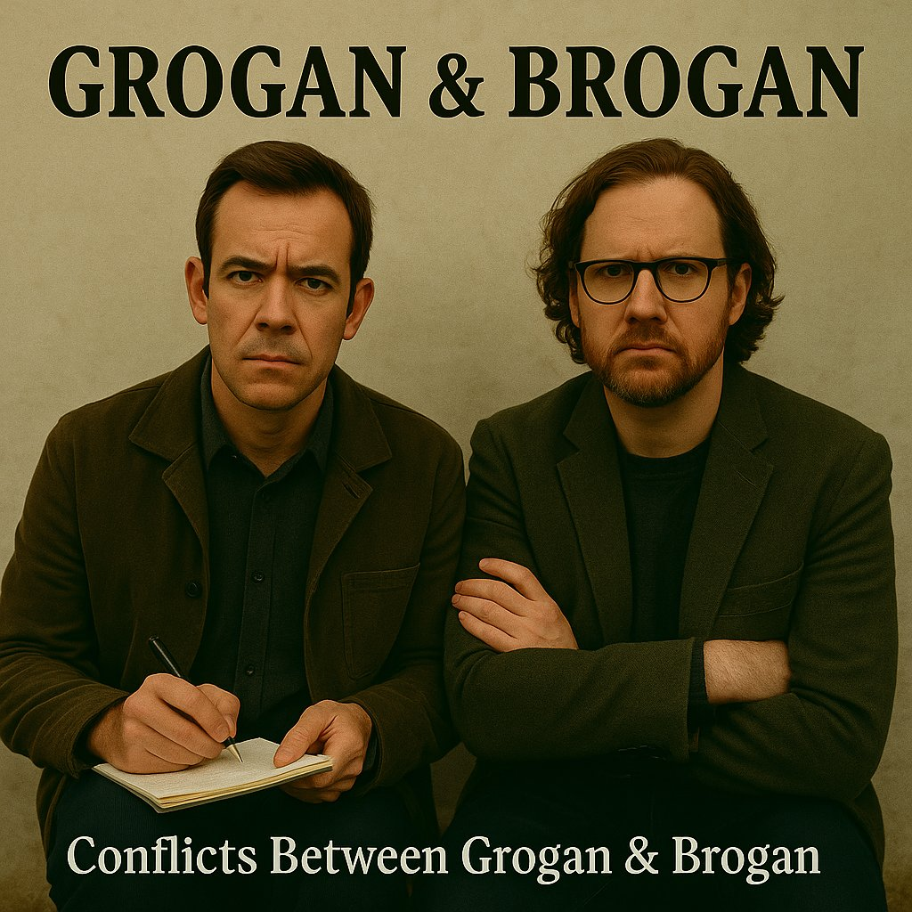

How I Met Brogan
Posted on 29 May 2025
Memories of Brogan...

🎶 How I Met Brogan by Grogan
I first met Brogan in a translation booth in Luxembourg. Yes — you read that right. Not at a pub session, not on a windswept Kerry road, not in the cell of a revolutionary monastery — but in a sterile European Union conference room where they were arguing about pig subsidies in seventeen languages.
He leaned into his microphone and whispered, “This place needs a bodhrán.”
I didn’t laugh. I wrote it down. That was the first line of the first song we ever wrote together. It was never released. We called it “Ballad of the Bureaucrat’s Pig.”
Brogan believed poetry belonged in places that didn’t want it. On roundabouts. In footnotes. In the gaps between tired words and missed chances. I think that’s why we got along.
We came from opposite ends of the same bog:
He — musical instinct incarnate. A man who could coax melody from a radiator pipe and claimed his earliest
influence was the sound of rain on a caravan roof.
Me — a compulsive scribbler. Raised on mass cards and protest songs, obsessed with rhyme, meter, myth, and
mistakes.
Together, we wrote. Songs about emigrants and eccentrics. Donkeys and industrial schoolboys. Priests who saw visions and women who saw through us. Some songs made people laugh. Some made them weep. A few did both in the same verse.
We bickered, of course. He liked first takes. I liked revisions. He believed in chaos; I believed in craftsmanship. But the music found a way through. Always.
Then one day, he disappeared.
Not like in a dramatic movie. No farewell note. No tragic accident. Just... gone. His fiddle left behind. His boots still muddy. A cupboard full of scribbled half-verses and jars of pickled beets he insisted were good for “melodic tone.”
For a while, I thought he’d faked his own death for publicity. Then I thought he’d gone feral and was living off-grid in Donegal, collaborating with seals. I still think that might be true.
In the years since, I’ve kept writing. But the songs come differently now. Slower. More haunted. Like they’re trying to tell me something he forgot to say.
Recently, I opened the old suitcase where we kept our lyrics — the Grogan & Brogan Songwriting Stash. Dozens of them. Some complete, some half-born, others written in languages neither of us spoke.
And I thought: I can’t let this vanish.
I’m nearly fifty. Too old for delusions, too young to give up. I want to publish the songs. Record them. Tour them across Ireland, Europe, and Africa — every place we ever dreamed aloud. Not for fame. Not even for closure.
For Brogan.
For the boy who opened his lunchbox to find a rodent and inspired a ballad.
For the girl who heard “Roses and Poitín” and laughed through her tears.
For Rainbow the donkey, who brayed on key.
For the songs that keep arriving, unbidden and beautiful, like drunken angels.
If you see Brogan — tell him the music’s waiting.
Tell him I kept his boots.
And tell him the gigs are starting soon.
Read moreSongs from the Stash — The Tour Begins
Posted on May 29, 2025
“Somewhere in a suitcase under my stairs, Brogan’s spirit was waiting.” I never meant to go back on the road...

But something started stirring this year — a sense that time was no longer patient. That the songs Brogan and I wrote — scribbled on receipts, beer mats, and prayer cards — weren’t just memories. They were blueprints. Prophecies. Ghosts.
So I opened the suitcase.
Inside?
The Grogan & Brogan stash.
Forty-seven songs we never released.
Twelve we only ever sang to donkeys.
Five written during a blackout in Ballymahone.
And one we swore we’d only perform “if the world started falling apart.”
Well… here we are.
🎶 What Is Songs from the Stash?
It’s not a greatest hits tour — because the world never gave us hits.
It’s not a comeback tour — because technically, we never went.
It’s a celebration. Of exile, devotion, satire, and survival. Of stories that had no place until now. Of the absent presence of Brogan, wherever he is.
Each night, I’ll open the suitcase and choose from:
- “Sleep Well Lads” — a lullaby for lost boys.
- “Rodent in the Lunchbox” — a spoken-word scandal.
- “The Drunken Paddy Reincarnated” — the gospel of glorious defiance.
- “The Emigrant’s Regret” — love lost in the cold streets of Amerikay.
- “Roses and Poitín” — a waltz for doomed romantics.
And new songs — written for this tour, from the edge of fifty.
There’ll be stories. Laughter. Silences you can feel. Maybe even a guest appearance from Rainbow the Donkey (if she cooperates).
📍 Where Are We Going?
Everywhere we weren’t invited to in the first place:
- Rural halls in Mayo, Cork, and Donegal
- Community theatres in Luxembourg, Berlin, and Brussels
- Courtyards in Cape Town and Harare
- A poetry shed in Kilfenora
- And a donkey sanctuary that’s “reviewing our request”
💬 Why Now?
Because I’m nearly fifty.
Because the songs are ready.
Because Brogan would never forgive me if I didn’t.
🛎 Want Us in Your Town?
Got a pub, parish hall, or potato field?
Email: bookgrogan@groganandbrogan.ie
We travel light. One mic, one guitar, one suitcase. And maybe a donkey.
🎟 First Dates Announced:
- 📅 Ballymahone Fair — June 20
- 📅 Galway Courthouse (Yes, the real one) — June 23
- 📅 A Shed Behind a Lidl in Luxembourg — June 30
- 📅 Whelan’s, Dublin — July 5
- 📅 Special Live Recording in Donegal — July 10 (Donkey access TBC)
“We made these songs to last. Now we’ll see if they can walk.”Read more
— Grogan
Lads, Legends, and Lamentations: The Women of Grogan & Brogan
Posted on 29 May 2025
Behind every Grogan or Brogan lies a woman with a sharper tongue, a better plan, or at the very least, a bottle of poitín labelled “for pain.”

🎶 Lads, Legends, and Lamentations: The Women of Grogan & Brogan
While Grogan stumbles through misty fields and Brogan loses bets involving donkeys and mushy peas, it’s the women in their world who carry the true poetry — fierce, funny, and fearsomely independent.
Take the red-haired woman at the fair in Roses and Poitín. She marches through Ballymahone like a banshee on a mission, lectures the poitín vendor, critiques donkey sculpture, and demolishes Grogan’s courtship verse with the line: “Then pray to the Holy Mother you don’t throw up on my shoes.” Iconic.
Or consider the widow in Handsome Devil, seduced by a fiddler with sad eyes and velvet trousers. When he vanishes, it’s not her furniture he’s taken — it’s her heart. Her final line, spoken from her deathbed, could silence any room: “I am still looking for the interstice between reality and dream.”
Then there’s the unnamed woman in The Lonely Washerwoman — a tragic ballad of love, betrayal, and terrible domestic timing. She does what Grogan and Brogan often don’t: takes action. It’s misguided, it’s awful, and yet it’s deeply human.
And of course, we have Margaret and Maureen — the indomitable voices of the Epistolary Suite. Margaret, the poetic penpal with a flair for fantasy. Maureen, the long-suffering wife with zero patience for nonsense and a talent for fire-breathing replies.
These women aren’t just muses or plot points. They’re the spine and spark of Grogan & Brogan’s ballads — complex, contradictory, and unforgettably alive. They outwit, outlast, and often outlove the lads.
As Brogan once said after being dumped for the third time in a week: “They break your heart, but they improve your songs.”
We raise a glass (and maybe a toffee) to the legends who haunt the verses and walk the boreens — fierce, flawed, and always worth singing about.
Read moreGrogan’s Guide to Living Abroad (Badly)
Posted on 29 May 2025
Whether you’re dodging rent in Birmingham or composing laments in a Luxembourg hostel, Grogan has thoughts — none of them useful.

🎶 Grogan’s Guide to Living Abroad (Badly)
If you're Irish and find yourself outside Ireland, odds are you're one missed Ryanair flight away from becoming a tragic ballad. Fortunately, Grogan’s here to help. Or confuse. Same thing really.
Tip #1: Trust No Landlocked Country
If there’s no sea breeze, there’s no sense. Your bones will dry out. See Boat for Boston or Lost
at Sea for what happens when you're cut off from salt water and moral direction.
Tip #2: Your Donkey Will Always Miss You More Than Deirdre
This is science. Rainbow didn’t judge, cheat, or critique your fiddle playing. If you're abroad and pining,
make sure it's for the right beast.
Tip #3: The Phrase “I’m Here for Cultural Exchange” Covers a Multitude of Sins
Including long stints in Polish hostels, questionable Lisbon poetry readings, and that regrettable poitín
tasting in a Luxembourg forest.
Tip #4: Learn the Local Word for “Eejit”
Because you will hear it. Often. Especially after quoting Yeats at the tax office.
Tip #5: Poitín + Existential Homesickness = Song
This is the formula behind The Exile’s Lament, England, and half of your emotional
breakdowns. Use responsibly.
Tip #6: Be Wary of Anyone Who Calls You “Well-Integrated”
It usually means you’ve stopped dancing at bus stops. Reconsider your life choices.
Tip #7: Remember — Even Abroad, There’s Always Another Grogan Nearby
Usually slumped over a pint, humming an unfinished verse, wondering how to rhyme “Eurocrat” with “spleen.”
Introduce yourself.
In the end, living abroad is less about success and more about survival — emotional, cultural, poetic. If you can’t find meaning, at least find a good pub. And if that fails, write a song and pretend it’s deep.
You may be lost at sea — but by God, you’ll have a chorus.
Read moreIn Praise of the Blessed Pint
Posted on 29 May 2025
Some say the black stuff is a drink. Grogan & Brogan know better: it’s a vocation, a philosophy, a slightly tragic love affair.

🎶 In Praise of the Blessed Pint
There are men who drink to forget, and men who drink to remember. Grogan and Brogan drink because the pint winked first.
It began, as most things do, in Ballymahone. Grogan had written a lament to a missing sock. Brogan had tried to bottle poitín using recycled holy water. Both were banned from the parish newsletter.
So they wandered — west, then east, then vaguely sideways — until they reached a pub whose name neither can recall but whose stout “tasted like forgiveness.”
What makes Irish stout holy?
It is black as the souls of bishops. Creamy as a nun’s sigh. It settles, as all things should. It teaches
patience, penance, and quiet songcraft. It stains your moustache and soul in equal measure.
Grogan says a proper pint should be poured in silence, observed like an eclipse, and then spoken to gently — as one would a haunted fiddle.
Brogan disagrees. He believes the pint is a mirror. “It shows you what’s inside. That’s why it’s black.”
Between them, they’ve composed 37 verses on the virtues of stout, including one accidentally recited at a cousin’s funeral and another banned by the Galway Tourism Board for “blasphemous agricultural metaphors.”
Of course, there are rules:
- Never toast without eye contact. It may summon banshees.
- Never trust a pint you didn’t see poured. (This applies to priests and pints alike.)
- Never write poetry while drinking stout unless you are prepared to weep or propose marriage to a statue.
In Luxembourg, the lads tried local brews. “It’s like stout,” said Brogan, “if stout forgot who it was and married into a Belgian family.”
So they returned to their roots. Or at least their stools. Grogan with a notebook full of epiphanies, Brogan with a face like rain and two half-verses about foam.
The pint remains. Steady. Silky. Sly.
And somewhere in the corner, as the head settles and the silence ripples, Grogan and Brogan raise their glasses and toast to the only religion they’ve never abandoned:
The Blessed Pint.
Read moreThe Donkey in Irish Traditional Music
Posted on 29 May 2025
They carried turf, saints, poitín, and prophets. Now they carry meaning — especially in the songs of Grogan & Brogan.

🎶 The Donkey in Irish Traditional Music — and in the hearts of Grogan & Brogan
The Irish donkey is more than a beast of burden. She is a muse, a martyr, a mobile metaphor. In folk music, she’s often the one character who never complains, even as she hauls seaweed, turf, or Grogan himself back from the fair in Ballymahone.
Historically, the donkey featured as the humble workmate of the peasantry — the rural backbone pulling carts through bog and boreen. But in song, she has evolved. In Grogan & Brogan’s universe, she achieves something higher: poetic elevation.
Consider “Rainbow,” Grogan’s equine soulmate and emotional anchor. She’s not just a donkey. She’s a confidante, a critic, a creature who outlasts the wife, the landlord, and the tax inspector. The refrain practically writes itself:
“Your song be abrasive, but for melody I’d have bought a parrot.”
Brogan claims to have once placed a winning bet on a donkey race in Louth. The donkey’s name was “Maud Gonne with Teeth.” The payout funded several failed romantic ventures and the first draft of The Book of Blarney, Vol. II.
But the donkey is not merely comic relief. In “Mental Health in the West of Ireland in 1968,” the donkey becomes a conversational partner — wise, silent, non-judging. The priest might deliver penance, the doctor prescriptions, but the donkey? She listens.
It’s no surprise that when Grogan once tried to write a spiritual ballad without mentioning a donkey, his pen snapped in half. Brogan declared it divine intervention.
To summarise: In Irish song, the donkey may seem lowly — but she carries high truths. She endures where others falter. She knows where the bones are buried. And in the songs of Grogan & Brogan, she’s every bit as important as the bard himself.
So next time you hear a bray from the back field, don’t ignore it. It might just be the beginning of your next chorus.
Read morePoitín & Philosophy: The True Spirit of Irish Thought
Posted on 29 May 2025
Before Socrates had hemlock, Brogan had poitín. Only one of them lived to finish his thoughts — and his pint.

🎶 Poitín & Philosophy: The True Spirit of Irish Thought
It’s often said that Ireland’s two great exports are saints and song. But Grogan & Brogan argue there’s a third: epistemological inebriation, bottled and passed hand to hand since the dawn of turf.
Grogan claims he wrote his finest verse after “consulting the smoky angel.” Brogan once declared: “The Holy Spirit is 70% proof and doesn’t like being questioned.” Together, they have forged a sacred school of thought known locally as The Lismore Lounge of Speculative Intoxication.
But this is not mere drunkenness. This is structured confusion — a long-standing tradition in which poitín serves as both *sacrament and solvent* for metaphysical inquiry.
Key principles of the Poitín School include:
- Reality is bendable — especially after the third glass.
- Truth is like mist: beautiful, elusive, and best observed through the bottom of a jar.
- Every meaningful conversation starts with “I probably shouldn’t be telling you this...”
In *Roses and Poitín*, Grogan attempts courtship using theological praise and poetic slurring. In *Give the Devil His Due*, he reaches moral enlightenment in the form of lyrical compromise. Brogan, meanwhile, once hallucinated a donkey quoting Kant. (“Categorical imperative? Get out of my field.”)
It’s said that when Joyce left Ireland, he took two suitcases: one for clothes and one for smuggled truth. Grogan & Brogan would argue you only need the second — and a bottle to go with it.
So pour a dram, open your third eye (and close your second), and let poitín guide your hand and undo your doubt. Just don’t forget what you wrote. Or where you wrote it. Or who you wrote it for.
As Brogan once muttered, forehead against the bar: “If Descartes had poitín, he would’ve doubted quicker.”
Read moreRural Ireland: A Love Letter in Turf and Absurdity
Posted on 30 May 2025
It is where time slows, donkeys whisper, and your sins are between you and the priest — unless he’s in the poem too.

🎶 Rural Ireland: A Love Letter in Turf and Absurdity
For Grogan & Brogan, rural Ireland isn’t a place — it’s a condition. A metaphysical peat bog where melancholy, magic, and mischief grow side by side. Where the rosary shares shelf space with a jar of poitín and the donkey knows more than the bishop.
Grogan calls it “The birthplace of longing.” Brogan calls it “the only place you can be broke, drunk, poetic and still invited to dinner.”
From Fishing Boats at Sea:
“In their beds, the emptiness of the starched clean sheets, Recalls the shapes that once to this house did keep…”
Here, silence speaks louder than sermon, and the land remembers. The characters of Grogan & Brogan’s ballads may wander far — to Birmingham, Boston or perdition — but their thoughts always stray homeward, to the bog, the boreen, the barrel of rain.
In Rainbow, a man’s deepest connection isn’t to his departed wife or estranged kin — but to his donkey:
“Dear God in heaven, may the donkeys be blessed, They’ve toiled in the fields and ever gave of their best…”
Rural Ireland is where saints are sarcastic and prophets wear gumboots. In Mental Health in the West of Ireland, the narrator’s only stable companion is a donkey named Rainbow — with whom he shares his diagnosis, his doubts, and likely his lunch.
“Sir, do I write in pencil or in pen?” “Here’s a pair of scissors, cut a hole in your finger and write it out in blood.”
And in The Exile’s Lament, the land itself is a lost lover, remembered in dreams more vividly than any city street:
“They all revolve around the valleys fair and green, Fairer than any maiden I have ever seen…”
For Grogan & Brogan, rural Ireland is not perfect. It’s tough, harsh, rain-soaked and ecclesiastically confusing. But it’s home. It’s the muse. It’s the thing worth singing about — again and again, until the turf runs out and the bottle’s dry.
And that’s why they keep writing.
Read moreFishing the Irish Sea: Salt, Song & Survival
Posted on 30 May 2025
It’s not just work. It’s myth. It’s mourning. It’s where Grogan & Brogan cast their lines into history — and hauled back verses.

🎶 Fishing the Irish Sea: Salt, Song & Survival
Fishing has always been more than industry in Irish life. It’s a spiritual act. A wager. A song waiting to happen. For Grogan & Brogan, the sea is a stage where tragedy, communion, and the occasional ghost all take their bow.
In Fishing Boats at Sea, the nets are full of more than herring. The boats return — but not all the men do:
“Upon the wall, are the pictures of those who did not return, From the ocean, whose nets and gear were spurned…”
The sea in these songs is both cruel and consoling — a paradox as Irish as a pint in the rain. In Lost at Sea, the fisherman pleads with his mother — and the elements — for safe return. It’s a ballad of aching devotion, weather-beaten fear, and Atlantic resolve.
“There was a strange electric smell in the air, And the seagulls were wheeling as our nets we did repair.”
Back on land, Lament of the Fisherman’s Wife gives voice to those left behind. A litany of rising tension, debt, calving cows, whiskey guilt, and the hard reality that the sea provides — but it also takes.
“Get out of bed ye, The ocean’s waiting to provide, Though it swallowed our brothers, In it our hopes we must confide.”
And then there’s Grogan himself, whose poems smell of brine and whose lyrics read like messages found in bottles washed ashore. Brogan, meanwhile, swears he once dated a mermaid near Ballycotton. (No witnesses.)
Fishing, for Grogan & Brogan, is not just about food or trade. It’s about memory, longing, and the unending Irish dialogue with the sea. A song line tossed like a net. A silence deep as the tide. And always — always — the hope that the boat returns.
Read moreGaeilge: Teanga na Fola, na Filíochta, agus na Fadhbanna
Foilsithe ar 30 Bealtaine 2025
Is í an Ghaeilge croítheanga G&B — fiú nuair nach dtuigeann siad a chéile, tuigtear an rud is tábhachtaí.

🎶 Gaeilge: Teanga na Fola, na Filíochta, agus na Fadhbanna
Is minic a chloistear Grogan ag rá: “Tá mo chroí i nGaeilge, ach tá mo inchinn fós ag aistriú.” Agus Brogan? “Is breá liom Gaeilge — ach is fuath léi mé.”
I bhfírinne, tá caidreamh G&B leis an Ghaeilge cosúil lena gcaidreamh le poitín: beagán de mhagadh, beagán de mhistéir, agus an iomarca de bhrí.
Is léir an Ghaeilge sna hamhráin mar Dying Tongues agus Letter from Donegal Airport, ina gcailltear duine i n-aerfort iargúlta de bharr míthuiscint teanga. Ach tá sé greannmhar freisin:
“Dúirt sí 'Fan ansin,' agus shíl mé gur ainm an bhaile é…”
Bhí iarracht ag Grogan uair amháin sean-nós a chanadh i gCorca Dhuibhne, ach d’fhág sé leis an línte seo:
“Ó mo chroí, níl a fhios agam an briathar don téarma sin — ach tá sé brónach go leor mar atá.”
Dóibh, is bealach í an Ghaeilge chun an stair a mhothú, na máithreacha a chloisteáil arís, agus rudaí a rá nach féidir i mBéarla gan casacht nó caint faoi aimsir na Peig.
Ag deireadh an lae, is breá le G&B an Ghaeilge, fiú má dhéanann sí crá orthu. Agus is é sin a dhéanann an grá fíor — buan, deacair, ach lán le ceol.
“Is minic a thuig an t-éan an fhilíocht nár thuig an fear — ach bhí sé á chanadh ar aon nós.”
Léigh tuilleadh“Un Verre de Poitín, s’il vous plaît”: Grogan & Brogan, French, and the Art of Exile
Posted on 30 May 2025
Grogan & Brogan speak French like they speak truth — awkwardly, poetically, and usually after one too many.

🎶 “Un Verre de Poitín, s’il vous plaît”: G&B, French, and the Art of Exile
For Grogan & Brogan, French is less a language than a *mood*. A vague perfume of melancholy and mischief that drifts into their songs whenever the Liffey seems too narrow for their European dreams.
Living in Luxembourg — surrounded by bureaucrats, bankers, and baguettes — they found themselves uttering phrases like “non remboursable” and “l’identité européenne” with increasing regularity. And as always, the songs followed.
In La Mariée de Portbou, Grogan reaches for French to approach a story too sad for English. The rhythm of the lines reflects the language’s elegance, even as the theme remains tragic:
“Tu étais couchée, Sous les fleurs blanches de la mer…”
Meanwhile, in The Drunken Paddy Reincarnated, Brogan waxes philosophical about Irishness abroad, calling himself “le dernier poète de la buvette.” He claims Joyce came to him in a dream, quoting Foucault in a Westmeath accent.
And in The Irish Winnie the Pooh, we hear the surreal collision of Gaelic soul and Gallic flourish:
“Mon dieu, said the donkey, Where is the honey of my youth?”
For G&B, French offers *distance* — from home, from heartbreak, from the stiff collars of Irish tradition. It’s a poetic passport that allows them to drift through memory and myth without declaring customs.
They still don’t speak French very well. But they sing it with feeling. And sometimes that’s more than enough.
As Brogan once told a Luxembourg waiter who corrected his accent: “Ah non, monsieur. I’m not trying to speak French. I’m trying to feel it.”
Read moreGrogan & Brogan sprechen Deutsch?
Posted on 31 May 2025
How did two Irish-rooted lads end up crooning in German? Sit tight...

🎶 Grogan & Brogan sprechen Deutsch?
It began — as many G&B adventures do — in a Luxembourgish bus shelter during a thunderstorm. Brogan was attempting to translate the chorus of *Whiskey in the Jar* into Hochdeutsch. Grogan was trying to remember the dative case while holding a dripping bodhrán. Someone shouted "Dat ass kee Reen, dat ass eng Apokalips!" and the rest, as they say, is history.
But the truth runs deeper.
Grogan (that’s me) has long harboured a linguistic itch. Raised on Irish rebel songs and Rainier Maria Rilke (blame the nuns), I fell in love with the angular poetics of the German tongue. There’s something in the way it holds a phrase — like a stone in the mouth — that reminds me of old Irish.
Brogan was less enthusiastic. “German,” he once declared, “is like a cupboard full of consonants falling down the stairs.” But even he admitted, over a Spätzle-laced supper, that certain German words — *Sehnsucht*, *Heimat*, *Vergänglichkeit* — carried the same ache as a good Irish lament.
So we began to experiment. Not out of pretension, but out of curiosity. What would it mean to sing an Irish song in German? Would it become a parody, a prayer, a punchline?
Turns out — all three.
We now have songs where the verses swing in English and the choruses lurch into German. Others where Grogan recites a poetic curse in Goethe’s tongue while Brogan hums *The Rocky Road to Dublin* underneath. We've written one about a grandfather in Namibia (*Großvater Herero*) and another that just repeats “Bratkartoffeln” to the rhythm of *Óró Sé do Bheatha ‘Bhaile*.
Why?
Because the Irish soul doesn’t stop at Shannon Airport. And sometimes, when you’ve been away from home long enough, German sounds more Irish than English ever could.
It’s in the longing. The exile. The strange, stubborn beauty.
And yes — sometimes it’s just because the word *Schmetterling* makes Brogan giggle like a six-year-old with a tin whistle.
We’re not trying to be clever. We’re trying to be honest. About how messy and marvellous language can be when you’ve got too many homes, too many hearts, and not enough syllables to go round.
If you ever hear an accordion wheeze out a line of Brecht in a Cork accent — that’s probably us.
Danke und slán,
Grogan (und ein bisschen Brogan)
Read moreGrogan & Brogan in Namibia
Posted on 31 May 2025
What are two Irish lads doing writing songs about Namibia? It's not what you think...

🌍 “It’s a long way from Ballymahone to Lüderitz.”
That’s what Brogan said the first time we stood on the red earth near Shark Island — looking out at a cruel Atlantic that had carried so many Irish out, and so many others in.
Namibia isn’t a place you expect to find in an Irish folk song. But for us, it was inevitable.
You see, Grogan’s grandfather — the mysterious “Großvater Herero” — served under a German flag in the colonial South West Africa campaigns. The details are muddy. Some say he deserted. Some say he joined the Nama resistance. All we know for certain is that he returned with a battered accordion and a hatred of uniforms.
Our song Großvater Herero is part family myth, part confession. It tells of guilt passed down like a tarnished heirloom. Of desert silence that never forgets. It’s a song where German mixes with Afrikaans, and history refuses to stay buried.
Another piece, Shark Island Lament, follows the windblown ghosts of that concentration camp near Lüderitz — a song written for those whose names are not in the museums, but in the sand. The Irish in us saw it and knew it: colonisation doesn’t change its clothes, just its accent.
Namibia showed us what happens when maps are drawn in blood and sand. And it made us wonder: where else has Ireland left its footprints, even where it never meant to?
So yes — Namibia. A place of endless sky, and bottomless grief. But also of song. And sometimes that’s all we have to offer — a song, an old accordion, a memory passed down like a wound that sings.
If you ever hear a G&B tune with a desert drone and a Berlin echo, now you know why.
With dust in our boots and guilt in our harmonies,
Grogan & Brogan
Read moreGrogan & Brogan’s Worst Gig
Posted on 31 May 2025
You think you've had a bad night? Try this on for size…

🎤 “The soundman was drunk, the mic was dead, and the only person clapping was a dog.”
That, in a nutshell, was Grogan & Brogan’s worst gig. But it started, as these things do, with misplaced hope and a dodgy promise.
We were booked to play at what was billed as the “Kilcar Cultural Weekender.” The poster had a harp, a pint, and what appeared to be the ghost of Patrick Kavanagh photoshopped into a kayak. We should have known.
The venue turned out to be the back room of a chipper, directly adjacent to the fryer. Half the crowd were there for battered sausages. The other half were the staff.
Brogan had tuned his bouzouki to open C# minor for dramatic effect. Grogan opened with a heartfelt rendition of “Lament for a Lost Librarian.” The silence that followed could have cured insomnia.
Things got worse. The organiser vanished halfway through. The “lighting technician” was a teenager with a vape and a torch. Midway through our third number, a fight broke out near the condiment counter — allegedly over who invented curry chips.
The final straw? A child climbed onto the “stage” and screamed: “YOU’RE NOT EVEN ON SPOTIFY!”
He was right. We weren’t. We still aren’t.
We finished our set with the dignity of monks on fire and collected our fee: two cans of Club Orange and a voucher for garlic mushrooms (expired). Brogan wept silently into his accordion case. Grogan took a vow never to perform again in any venue where coleslaw is served by the litre.
So yes, that was the worst gig.
But the thing is — we still wrote a song about it. And the dog did clap. With its tail. And sometimes, that’s enough.
Never again, Kilcar. Unless the cheque clears.
Grogan & Brogan
Read moreGrogan, Memory & the Madness of History
Posted on 31 May 2025
He’s a man of many tunes and a memory like a museum. But what exactly is Grogan's relationship with history?

🕯 “History isn’t a story, it’s a haunting.” — Grogan, to Brogan, somewhere between Doolin and Dún Laoghaire.
Grogan has always been fascinated by the past — not in the way of academics or archivists, but like a man who's convinced the dead are still whispering. Whether in a famine field, an abandoned convent, or a pub that remembers the Tan War better than its drink prices, Grogan listens.
And the past speaks to him. In songs.
Take The Exile’s Lament: a song that blurs the sorrow of one man’s forced departure from Ireland with the wider grief of a nation broken by emigration. Or Großvater Herero, which traces a familial thread back to colonial Namibia and unearths not just ancestry, but atrocity.
There’s reverence in these songs — for loss, for dignity, for complexity. But there’s also a slyness. Grogan never lets sentimentality rot the roots. Songs like Paddy Macaroni and The Bard of Ballymahone poke fun at Ireland’s obsession with its own myths, even while participating in them.
Brogan once said: “Grogan respects history the way a cat respects furniture — it’s sacred, but still gets clawed.”
That’s true. In Shark Island Lament, we hear Grogan's reverence in the way he channels the voice of the dead — but his rage seeps through in the very choice to sing about something so many have forgotten.
In other songs — like The Poet of Old — Grogan takes history personally. It’s not some distant tapestry. It’s a coat he wears, even if it’s itchy. Memory is not a luxury. It’s the price of being awake.
And so, in every verse, he reanimates the past. Not as nostalgia — but as resistance.
In the G&B universe, history is not a thing that happened. It’s a ghost that still sings. And Grogan, despite his cranky scepticism, remains its unlikely cantor — braying, ballading, bellowing… for all the voices that never got to.
Grogan & Brogan
Read moreGrogan & Brogan on Mental Health
Posted on 31 May 2025
It’s not all poitín and punchlines. Sometimes, it’s just you and the silence…

🧠 “I talk to my donkey. The donkey doesn’t answer. And somehow that helps.” — Grogan
For all the laughs, the wigs, the wild gigs and wandering, Grogan & Brogan have never shied away from the shadows. If anything, they walk beside them — quietly, stubbornly, like men who know the road is long and often lonely.
In songs like Mental Health in the West of Ireland (1968), we hear it clearly: a world where men talk to animals because there’s no one else to talk to. Where emotional pain is wrapped in silence, or smothered under a layer of turf smoke and sarcasm.
Grogan has never claimed to have answers. But he has songs. And sometimes that’s the first light in the bog.
Without You offers another take — a raw, almost prayer-like appeal to love as the thread that holds us together. Not romantic love. But the kind that keeps you going when your own mind tries to leave you behind.
There’s humour too — because there has to be. The Mad Priest of Ballynahinch might raise eyebrows, but it’s also a portrait of someone unravelled by guilt, faith, and the quiet violence of isolation.
Brogan puts it simply: “We write these songs because we needed them ourselves first.”
And maybe that’s the point. Not to fix it. Not to tidy it. But to say it. To sing it. To give the sadness a tune, so it has somewhere to go.
If you’ve ever stared at the sea too long, or felt too tired to explain the storm in your chest, know this: Grogan’s probably already written it down. And Brogan’s somewhere behind him, tuning the bouzouki.
Grogan & Brogan
Read moreGrogan & Aleksandr Blok: A Strange Devotion
Posted on 31 May 2025
You wouldn’t think an Irish cultural Appropriator would find a kindred soul in a dead Russian Symbolist. But then again, you haven’t met Grogan.

📖 “I do not love the living — only the dead who still speak.” — Grogan, quoting Blok to a startled Latvian customs officer
There are obsessions. And then there’s Grogan’s relationship with the Russian poet Aleksandr Blok (1880–1921).
It began in St. Petersburg, 1998. Grogan was meant to be teaching English. Instead, he found himself in a crumbling stairwell, clutching a samizdat copy of The Twelve and wondering why every Russian seemed to walk with their soul outside their body.
Blok’s poetry — mystical, doomed, aching with history — hit him like a communion chalice to the back of the head. Grogan, already susceptible to ghostly voices and metaphysical rain, was hooked.
In Blok, he found a brother in lyric exile: someone who worshipped beauty but also feared it. Someone who loved the past so much it nearly killed him.
This devotion appears — sideways — in several G&B songs. Voice of the Mystic Homeland owes its cadence to Blok’s symbolist rhythms. Without You carries the same tremble between longing and ruin. Even La Mariée de Portbou, though in French, is soaked in that Blokian atmosphere — where trains disappear, women become apparitions, and time itself unravels into snow.
Brogan tolerates this fixation with the good humour of a man who once caught Grogan whispering “O mysterious Lady” into a glass of kvass.
But it runs deep. Blok gave Grogan permission — not to be Russian — but to be haunted. To carry the weight of culture without needing to explain it. To write songs that ache not with memory, but with the absence of memory.
As Grogan put it: “I don’t understand Blok. That’s why I love him.”
And somewhere in a snowy alley of Petrograd, a ghost smiles through his pince-nez.
Grogan & Brogan
Read moreGrogan on Childhood Memories
Posted on 31 May 2025
Not all memories are golden. Some are turf-smoked, others half-sour. And some wear short trousers and never quite leave...

🪀 “The past is a goat in the living room. You can ignore it, but it will still eat your curtains.” — Grogan
Grogan doesn’t talk much about childhood — unless he’s had poitín. Or heard the sound of a football against a gable wall. Or caught the faint smell of wet linoleum and boiled ham. Then the veil lifts.
There are glimpses in his songs. Your Father is Dead is a knife of a memory, drawn from a real-life cruelty that left its mark in lowercase letters. It’s not sentimental — it’s surgical. And true.
The Artist reaches back too — to a boy who saw the world differently and got smacked for it. Who drew saints in biro and was told not to be soft. Who wanted a pencil, and got a rake.
For Grogan, memory isn’t a scrapbook. It’s a battleground. Some of it tender. Some of it unbearable. And yet — he never discards it. He shapes it into songs. He turns it, like turf, until it’s dry enough to burn.
Even the comic ones, like Mental Health in the West of Ireland (1968), are filled with echoes of boyhood misunderstanding — listening in on adult sadness without the language to name it.
Brogan once found Grogan staring at a cracked toy fire engine and asked if he was alright. Grogan replied: “I’m grand. Just remembering what it’s like to be five and already broken-hearted.”
He writes it down. He sings it. And somewhere in the song, the goat in the living room settles down. For a while.
Grogan & Brogan
Read moreGrogan & Brogan on the Islands of Ireland
Posted on 31 May 2025
Not every exile crosses an ocean. Some only drift a few miles west — and never return.

⛴️ “The sea isn’t water. It’s silence with weather.” — Grogan, watching the Arranmore ferry vanish in fog
Grogan has always had a thing for islands. Not just the obvious kind — the Inishbofins, Torys, and Valentias — but the emotional ones. The psychic rock outcroppings where old people tell stories to the wind and children leave without saying goodbye.
He wrote Lost at Sea after staring out at Skellig Michael for too long. He claims the island hummed back at him. Brogan thinks it was just hunger. Either way, the song speaks of those left behind — and those who never came home.
There’s something about islands in Irish consciousness. We project things onto them. Saints. Ghosts. Old lovers. Wild goats. Grogan once spent a week on Clare Island talking to a stone circle and came back with three verses and a sunburn.
In Fishing Boats at Sea, Grogan’s islands become metaphors for men — unreachable, rugged, watching the world from afar. In The Emigrant’s Regret, the island is home: a dot in the Atlantic that haunts the emigrant’s dreams like a prayer they forgot how to say.
Brogan, as usual, is more practical: “An island’s grand if you’ve a boat. Or a pub.”
But for Grogan, the islands are poems without stanzas. They don't need to rhyme. They just need to be. Remote. Wounded. Defiant.
We all carry a few islands inside us. Some with music. Some with silence. Some we’ll never visit again — except in song.
Grogan & Brogan
Read moreGrogan & Brogan and the Butterflies of Ireland
Posted on 31 May 2025
They say butterflies don’t belong in Irish weather. But like poems, grief, and divilment — they come anyway.

🦋 “A butterfly is just a ghost with better timing.” — Grogan
Grogan has long held a quiet obsession with Irish butterflies. Not in a collector’s way — he doesn’t pin or label. He watches. He notes. He listens.
There’s a sense in his songs that butterflies are not insects, but messages. From where? From whom? He never says. But in Voice of the Mystic Homeland, one drifts through the final verse like a spirit choosing not to stay. In Rainbow, a butterfly appears beside the donkey — both mysterious, both holy in their own stubborn way.
Brogan calls them “fluttering lies from the hedge.” But even he paused once when a Painted Lady landed on his guitar string and stayed for a full verse.
In Irish folklore, butterflies can be the souls of the dead. In G&B mythology, they’re part of a deeper world — not symbolic, but actual. They don’t represent freedom. They are freedom. Fleeting, lovely, impossible to follow without losing yourself.
Grogan once chased a Green Hairstreak across the Burren and lost track of time for three hours. He returned with a sunburn, a half-written stanza, and a wild look in his eyes. “She was teaching me a new scale,” he said.
And so they keep appearing. In lyrics. In gardens. In graveyards. On stage once, during Fishing Boats at Sea, a Red Admiral landed on Grogan’s notebook. He closed it gently. The song ended early that night.
Sometimes you follow the butterfly. Sometimes it follows you.
Grogan & Brogan
Read moreGrogan on Gaelic Curse Words
Posted on 1 June 2025
They don’t swear in Irish. They cast spells. They bend the air. And Grogan should know — he’s been hexed twice.
💀 “An English curse is a punch. An Irish one is a slow, delicious drowning.” — Grogan
There’s a reason Grogan collects old Irish curse words the way some people collect stamps or pub coasters. It’s not to use them — it’s to understand them. To feel their weight. Their music. Their generational venom.
Take “Go ndéana an diabhal dréimire de chnámh do dhroma ag dreapadh go hIfreann.” — “May the devil make a ladder of your backbone while climbing down to Hell.”
It’s not rage. It’s craft. It’s storytelling with a grudge.
Brogan once described Gaelic cursing as “a kind of aggressive poetry.” Grogan disagreed. He said it was “a folk religion. A way of evening the score when all other powers have failed.”
In songs like The Mad Priest of Ballynahinch and Ó mo chroí, you’ll hear traces — not literal curses, but the same energy: incantations laced with grief, bile, and beauty. Sometimes Grogan includes a line that sounds harmless until you realise it translates roughly as “May your cows calve sideways forever.”
His grandmother once cursed a tax inspector using only a prayer and a weather report. It snowed sideways for three days. Grogan took notes.
Modern English swearing bores him. It’s blunt. Efficient. Transactional. Irish cursing is theatrical. Ceremonial. It takes its time. You don’t drop a Gaelic curse. You compose it.
And you don’t say it when you’re angry. You say it when you’re ready.
So next time you hear a line that begins with “Go bhfóire Dia ort…” — listen closely. It might sound like a blessing. But if Grogan is saying it, check your cattle, your luck, and your back.
Grogan & Brogan
Read moreGrogan & Brogan on Conflicts Between Grogan & Brogan
Posted on 4 June 2025
“We never fight,” Grogan insists. “We engage in prolonged thematic divergence.” Brogan disagrees. “We fight. But we do it like gentlemen — with metaphors and bad posture.”
⚔️ “There was once a three-day silence over whether the word ‘lilt’ could be used in a ballad about a drowning,” says Brogan. “I stand by the pause.”
Their conflicts are rarely loud — but often operatic in tone. “It’s less shouting,” Grogan explains, “and more prolonged sighing across a field.”
Topics of dispute include:
- Whether melancholy has a tempo.
- How many donkeys can be referenced in a single album.
- Who actually wrote “The Ballad of Margaret’s Elbow.”
- The correct emotional tone for the word ‘jam.’
They once stopped speaking for a week over a harmonium. “I thought it was out of tune,” Grogan says. “Brogan thought I was out of touch.”
Resolution usually comes through toast, or a walk in mist. “Sometimes,” Brogan says, “we just hear a robin and forget what we were arguing about.”
They agree that conflict, handled right, is a form of editing. “I sharpen his sentimentality,” Grogan says. “And I soften his rage,” Brogan replies.
So yes, they disagree. Often. But always in service of the same thing: the song, the friendship, and the shared belief that there is nothing more sacred than a line delivered with conviction — even if it’s about chutney.
Grogan & Brogan
Read moreGrogan & Brogan on Xhosa vs Zulu
Posted on 4 June 2025
Brogan once tried to settle the matter with a simple test: “Whichever language lets you say ‘I am not angry, but I am disappointed’ using clicks — wins.” Grogan countered: “No, whichever language lets you forgive someone with the most dignity — that’s the real king of tongues.”

🔤 “Zulu punches, but Xhosa whispers and clicks.” — Grogan
They spent an entire Tuesday debating the merits of consonant architecture. “Zulu,” said Brogan, “has the commanding tone of a village chief who’s had three espressos.” “Xhosa,” replied Grogan, “is the music of stars having a quiet family argument.”
Brogan admires the declarative grandeur of Zulu. “If I were to announce my candidacy for King of All Africa, I’d do it in Zulu.” Grogan prefers the complexity of Xhosa. “If I were to tell someone I forgive them for stealing my goat, but I still remember — it would be in Xhosa.”
They briefly attempted to learn both languages, using an online course that taught them how to say “My aunt is in the forest” with four distinct clicks. “Vital,” said Brogan. “You never know when your aunt might wander.”
Eventually, they agreed that comparing the two was like comparing a lion to a leopard. “One roars,” said Brogan. “One disappears and reappears behind your left elbow,” added Grogan.
So whether you speak Zulu with the power of a royal edict or Xhosa with the grace of a breeze full of meaning — speak it with heart, and preferably not with your mouth full.
Grogan & Brogan
Read moreGrogan & Brogan on the Ethics of Arguing with Yourself in Public
Posted on 4 June 2025
“Technically,” says Grogan, “I win every argument I have with myself — but I also lose, which keeps me humble.” Brogan adds: “The key is to stage the argument near a duck pond. Then people assume you're eccentric, not unstable.”

🗣️ “Self-disagreement is simply internal democracy played out with bad acoustics.” — Brogan
They both maintain that arguing with oneself is healthy — provided you observe certain standards: no name-calling, no threats involving soup, and definitely no pointing at dogs for emphasis.
Grogan believes in “internal rehearsal.” “Better to yell at yourself in the bakery queue than say something unforgivable to your cousin at Christmas.” Brogan prefers what he calls “experimental narrative testing,” often involving hats.
They differ slightly on tone. Grogan favours sotto voce muttering with hand gestures. Brogan is more theatrical — once delivering a soliloquy about damp laundry to a queue of startled tourists in Lisbon.
“There’s a thin line,” Grogan warns, “between introspection and alarming a librarian.” Brogan nods. “But what are librarians for, if not to be gently unsettled?”
They conclude that it’s not whether you argue with yourself — but how. “Do it with dignity,” Grogan insists. “And if you must raise your voice,” Brogan adds, “do it in Latin. People will assume it’s a prayer.”
Grogan & Brogan
Read moreGrogan & Brogan on EU Citizens Retiring in Greenland
Posted on 4 June 2025
“It’s the only place left where no one asks what you used to do,” says Brogan. “In Greenland,” adds Grogan, “you’re just a person who owns too many jumpers and is oddly serene about snow.”

🧊 “The main advantage of Greenland,” says Grogan, “is that you no longer have to explain yourself. Mostly because no one’s around to ask.”
Brogan was drawn to the stillness. “There’s a silence here,” he says, “that you can lean against.” Grogan preferred the bureaucracy. “It’s very calming to deal with officials who only speak Danish and reply to emails by sled.”
They initially worried about winter. “But after forty-three days of darkness, your sense of time just dissolves. Like a biscuit in gløgg.”
They’ve taken to writing letters to Brussels they never post. “Dear Commission,” writes Brogan, “I have joined a seal choir and renounced footwear.”
Grogan tends a small garden of lichen and complaint. “Mostly I grow things that don’t care if they’re ignored.”
Asked whether Greenland is suitable for EU retirees, they both nod solemnly. “It’s perfect,” says Brogan. “No banks, no buzzwords, just the wind and the slow, forgiving snow.”
“And the occasional EU directive caught in a drift,” Grogan adds. “We collect them like sea glass.”
Grogan & Brogan
Read moreGrogan & Brogan on Whether the Slip Jig Was Meant for People with Three Legs
Posted on 4 June 2025
“It’s in 9/8,” Grogan says, “which is either a time signature or a cruel joke.” Brogan adds: “No normal person moves in threes. Not unless they’re a goat, a spider with scheduling issues, or my Aunt Carmel after sherry.”

🩰 “It’s not a dance,” Grogan says. “It’s a form of polite collapse.”
They first encountered the slip jig at a village ceilí where a local woman named Sorcha moved like a “phantom with unfinished business.” Brogan attempted to join her. “I hopped. I dipped. I panicked. I think I summoned something.”
Grogan once theorised that the slip jig was invented by a fiddler with no regard for human anatomy. “He watched someone fall down the stairs and thought, ‘that’s the rhythm I want.’”
They experimented with extra limbs — socks stuffed into trousers, broom-handles strapped to knees. “Did it help?” someone asked. “Only in spirit,” said Brogan. “And only briefly.”
Grogan prefers waltzes. “They accept your limitations. The slip jig demands your secrets.”
They finally agreed the slip jig is not meant for mortals. “It’s faerie rhythm,” Grogan whispers. “Something older than coordination.”
So if you ever feel the 9/8 calling you from the field beyond the fence — beware. “It’s not a dance,” Brogan warns. “It’s a test. And your knees are not invited.”
Grogan & Brogan
Read moreGrogan & Brogan on Their 10 Favourite Odd Sounds
Posted on 4 June 2025
“The world is a concert of strange acoustics,” Grogan declares. “You just have to stand still long enough to hear the percussion of nonsense.” Brogan nods. “I once mistook a goat sneezing for a door to another dimension. It changed me.”

🔊 “We don’t collect stamps,” says Brogan. “We collect noises.”
- The sound of a teabag hitting the bottom of a cup — “A soft thump of purpose,” says Grogan.
- The distant honk of a confused goose at 3 a.m. — “Existential. Possibly biographical.”
- The slurp of a reluctant boot emerging from a peat bog — “Brogan calls it ‘rural applause.’”
- Ice cracking in a glass during an argument — “A domestic plot twist,” Grogan notes.
- The accidental whistle your nose makes when you're pretending to be asleep — “Proof the body has opinions.”
- The wet slap of a fish against a table in Wexford — “More emotional than it sounds.”
- The echo of “Sorry” shouted into an empty cathedral — “Brogan tried it once. Still waiting to hear it come back.”
- The squeak of a supermarket trolley that only turns left — “A tragic metaphor, if you listen closely.”
- The startled intake of breath when someone realises they’ve been holding it since 1998 — “Common during therapy and plumbing.”
- The faint, inexplicable creak in a perfectly still house — “Grogan insists it’s just wood. Brogan suspects it’s remorse.”
“The world doesn’t lack music,” says Grogan. “It just hides it in strange places.”
“And some of the finest compositions,” adds Brogan, “require no instrument but a life lived oddly.”
Grogan & Brogan
Read moreGrogan & Brogan on the Funniest Eavesdropping Stories They Have Ever Heard
Posted on 4 June 2025
“We don’t spy,” says Grogan. “We simply tune into passing broadcasts of human confusion.” Brogan agrees. “A café is just a theatre with coffee and worse acoustics.”

👂 “If people didn’t want to be overheard,” says Brogan, “they wouldn’t speak in perfect punchlines while standing next to me.”
- The Breakup at Table 9: “I’m not saying you’re emotionally distant, Mark — I’m just saying I know more about the barista than I do about your dreams.” (Grogan applauded softly.)
- Philosophy in the Laundrette: “If socks have souls, then where do the missing ones go?” “Probably France.”
- The Grandmother on the Train: “He says he’s a minimalist now, but I saw four different types of chutney in his fridge. Minimalism my arse.”
- The Toddler at the Butcher’s: “Mummy says that piggies make bacon, but I saw Peppa Pig and she was nice.”
- The Nervous First Date: “Technically, I live with my parents. But spiritually, I inhabit a lighthouse of personal growth.”
- The Disgruntled Dog Owner: “I wanted a companion. I got a hairy anarchist with boundary issues.”
- The Hairdresser’s Confession: “I sometimes give people ‘accidental bangs’ if they’ve been rude. But I call it fate.”
- The Man in the Queue: “If this is fast food, I’m a cucumber.”
- The Woman with the Loud Phone Call: “I told him I’m emotionally available but I wasn’t available emotionally at the time. That’s not hypocrisy — that’s logistics.”
- Brogan’s Favourite (overheard by Grogan): “If you must leave me, do it like a gentleman — in silence, via WhatsApp, and preferably during the credits.”
“People are always more interesting when they forget they’re being listened to,” says Grogan.
“Which is why we carry notebooks,” Brogan adds, “and a plausible expression of mild deafness.”
Grogan & Brogan
Read moreGrogan & Brogan on Misheard Lyrics That Changed Their Worldview
Posted on 4 June 2025
“Some people hear music,” says Grogan. “We hear questionable poetry buried under questionable diction.” Brogan adds: “Half of life is just confidently singing nonsense until someone corrects you — or joins in.”

🎶 “I thought it was ‘Hold me closer, Tony Danza’ for twenty years,” says Brogan. “I still prefer it.”
- “Sweet dreams are made of cheese” — Grogan believed this for a decade. “It gave the song a whole new depth. I thought it was about lactose-based longing.”
- “There’s a bathroom on the right” (actual: “There’s a bad moon on the rise”) — Brogan used it as travel advice for years. “It made Creedence very helpful.”
- “I can see clearly now Lorraine has gone” — Grogan thought it was about a particularly disruptive woman. “I pictured overturned furniture.”
- “Excuse me while I kiss this guy” — Brogan preferred it that way. “It added tenderness to Hendrix.”
- “We built this city on sausage rolls” — “And why not?” Grogan demands. “It's the most plausible line they’ve ever written.”
- “Don’t go, Jason Waterfalls” — Brogan was deeply moved by this personal appeal. “I imagined Jason as a misunderstood poet-plumber.”
- “Every time you go away, you take a piece of meat with you” — “Romantic cannibalism,” Grogan explains. “It was the 80s.”
- “I left my brains down in Africa” — “Fair,” Brogan shrugs. “It was a long trip.”
- “It’s too late to order fries” (actual: “It’s too late to apologize”) — Grogan wept at this version. “Because it’s always too late.”
- “No woman, no fries” — “This one,” Brogan insists, “changed everything I believe about both feminism and lunch.”
“We never correct anyone anymore,” Grogan says. “What they think they heard is probably more meaningful.”
“Mishearing,” Brogan concludes, “is the foundation of most religions and at least three of our friendships.”
Grogan & Brogan
Read moreGrogan & Brogan on the Reality of Nerds and How They Are Perceived in Armenia
Posted on 4 June 2025
“A nerd,” says Grogan, “is just a poet who collects data.” Brogan adds: “In some countries that’s charming. In others, it’s grounds for mysterious respect.”

♟️ “In Armenia,” Brogan notes, “nerds are not mocked — they are elected to things.”
They were first alerted to the Armenian reverence for intellectualism when a twelve-year-old girl beat Brogan at chess using only one hand and no visible expression. “I felt seen,” he said. “Then humiliated. Then strangely proud.”
Grogan insists that in Armenia, being a nerd is “not a social liability but a quiet superpower — like knowing the correct temperature for brewing black tea at altitude.”
Brogan once attempted to explain Dungeons & Dragons to an Armenian librarian, who nodded and replied, “Ah, so it is a strategy for resolving psychological tension through controlled mythic structures.”
They were invited to a poetry night in Yerevan, where the audience wore glasses *voluntarily*. “I felt intellectually underdressed,” Grogan confessed. “I only brought three metaphors.”
“The real difference,” Brogan concludes, “is that in Armenia, nerds are romanticised. In Ireland, they’re mostly given nicknames and told to go outside.”
So if you’re a nerd in need of a homeland, Grogan & Brogan suggest: go east. Bring a scarf. Know your Tolstoy. And maybe — just maybe — someone will call you a visionary instead of asking why you don’t play football.
Grogan & Brogan
Read moreGrogan & Brogan on the Moment They Realised They Had Similar Sounding Names
Posted on 4 June 2025
“It took us years,” says Brogan. “We were too close to the vowels to see them.” Grogan nods. “Like two sheep in a fog — until one bleated the truth.”

🔁 “The realisation hit us mid-sentence,” Grogan says. “I was introducing him and realised I had just said my own name with a cold.”
Brogan insists it wasn’t deliberate. “I genuinely thought I was the only -ogan in town. Then along comes Grogan with his assumptions and his ornamental teapot collection.”
They briefly considered resolving the issue by one of them changing names. Grogan suggested ‘Steve.’ Brogan suggested ‘Groban.’ A standoff ensued.
“It’s not the names themselves,” Grogan explains. “It’s the implications. People think we’re a law firm, or a tragic vaudeville duo.”
They’ve endured years of postal mix-ups, mismatched monograms, and misattributed poetry. “He got thanked for my haiku about grief and margarine,” says Brogan. “It ruined my week.”
Eventually, they embraced it. “We are phonetic twins,” Grogan declares. “Two ends of the same comedic accordion.”
“Besides,” Brogan adds, “if you can’t tell us apart by now, perhaps we’re just your inner monologue having a cup of tea with itself.”
Grogan & Brogan
Read moreGrogan & Brogan on Why Haircuts Are Often a Source of Confusion Amongst Their Fans
Posted on 4 June 2025
“The problem with identity,” says Grogan, “is that it’s often stored in the sideburns.” Brogan agrees: “The moment one of us trims a fringe, the other gets asked for directions in IKEA.”

💇 “At a gig in Doolin,” Brogan recalls, “a man shouted ‘Play the potato song!’ at Grogan for ten minutes. I had written it. But Grogan had the haircut.”
They once tried getting the same trim “to unify the brand.” The result: chaos. “We were mistaken for a musical hedge fund,” Grogan muttered. “Or twins in mourning.”
Fans rely heavily on visual shorthand. Grogan is “the one with the wind-swept look of poetic trauma.” Brogan is “the tidy one who might also do your taxes.”
“But when Brogan gets a fade,” Grogan laments, “I’m suddenly the chaotic one. Which is confusing because I am — but I prefer to earn that reputation, not inherit it follicularly.”
They tried subtle markers: different hats, a symbolic earring, a scarf that says *“I’m Grogan, probably.”* None of it helped. “People look at the hair,” Brogan says. “They trust the hair.”
Now, before any public appearance, they coordinate trims. “Not to match,” Grogan insists. “Just to avoid emotional whiplash.”
So if you’re ever unsure who’s who — don’t rely on the fringe. Listen to the sighs. Count the metaphors. Or just wait: one of them will inevitably mention a donkey.
Grogan & Brogan
Read moreGrogan & Brogan on Conflicts Between Grogan & Brogan
Posted on 4 June 2025
“We never fight,” Grogan insists. “We engage in prolonged thematic divergence.” Brogan disagrees. “We fight. But we do it like gentlemen — with metaphors and bad posture.”

⚔️ “There was once a three-day silence over whether the word ‘lilt’ could be used in a ballad about a drowning,” says Brogan. “I stand by the pause.”
Their conflicts are rarely loud — but often operatic in tone. “It’s less shouting,” Grogan explains, “and more prolonged sighing across a field.”
Topics of dispute include:
- Whether melancholy has a tempo.
- How many donkeys can be referenced in a single album.
- Who actually wrote “The Ballad of Margaret’s Elbow.”
- The correct emotional tone for the word ‘jam.’
They once stopped speaking for a week over a harmonium. “I thought it was out of tune,” Grogan says. “Brogan thought I was out of touch.”
Resolution usually comes through toast, or a walk in mist. “Sometimes,” Brogan says, “we just hear a robin and forget what we were arguing about.”
They agree that conflict, handled right, is a form of editing. “I sharpen his sentimentality,” Grogan says. “And I soften his rage,” Brogan replies.
So yes, they disagree. Often. But always in service of the same thing: the song, the friendship, and the shared belief that there is nothing more sacred than a line delivered with conviction — even if it’s about chutney.
Grogan & Brogan
Read moreGrogan & Brogan on Snail Racing
Posted on 2 June 2025
Some say sport is about speed. Grogan says: only if you misunderstand time itself. “True racing,” he claims, “is the art of almost arriving.”

🐌 "You don’t race a snail. You accompany it. Like grief. Or certain types of cheese.” — Grogan
Brogan runs a semi-annual event in West Clare called the Mollusk Grand Prix. Entry is free, unless your snail has a sponsorship deal, in which case there’s a poetry surcharge.
His champion, “Lightning O’Leary,” once took three days to finish the course — not due to fatigue but because he stopped to admire a dandelion. Brogan claims it was a form of protest.
Grogan distrusts the whole enterprise. “Snails,” he says, “have nothing to prove. They’re Zen monks with slime trails.” He once tried to train one, but it kept crawling toward his copy of *Ulysses* and refusing to move.
Brogan insists on custom jerseys. One year he stitched ‘Go Fast, Take Naps’ onto silk using a thimble, a rosary, and what he claims was divine guidance. The snail refused to wear it and ate the hem.
Their biggest dispute came when Grogan entered a rock and claimed it was “a retired snail.” Brogan disqualified him on aesthetic grounds, citing Rule 4B: “All racers must express at least the illusion of forward motion.”
Despite the arguments, they agree on this: watching snails race is good for the soul. It forces you to pause. To breathe. To rethink velocity. To admit that sometimes the finish line is just a socially acceptable excuse to begin again.
So here’s to snail racing. The slowest rebellion. The quietest sport. The only contest where losing with style is considered a philosophical victory.
Grogan & Brogan
Read moreGrogan & Brogan on Bisous
Posted on 2 June 2025
They say every culture has its customs. Grogan says: some just involve more cheek contact. “The French invented bisous,” he claims, “to confuse the Irish and delay trains.”

💋 “A kiss on each cheek is not affection. It’s bureaucracy.” — Grogan
Brogan once got caught in a five-bisous chain in a village near Lyon. “I lost two hours and all sense of identity,” he recalls. “By the third cheek, I was speaking Occitan.”
Grogan prefers the Irish system. “A nod, a grunt, and a vague gesture toward tea. No physical contact, no emotional commitment. Just the way Saint Patrick intended.”
They once tested their own greeting system — two air fiddles and a synchronized sigh — but it failed to catch on outside Ennistymon. “People thought we were haunted,” said Brogan.
Grogan maintains that bisous are a form of surveillance. “Each kiss is a data point. By the fourth one, they’ve mapped your emotional topography and taxed your inner child.”
Brogan disagrees. He sees bisous as currency. “Three in Paris, four in Nice, five in Corsica — it’s a form of regional inflation.” He once tried to pay for lunch with a well-placed peck. The waiter was unmoved.
Despite cultural confusion, they agree: bisous are an art form. A choreography of the face. A socially mandated intimacy that dances the line between charm and terror.
So here’s to the bisous. The kiss without commitment. The ritual without resolution. The only form of affection that might come with a weather warning and a regional map.
Grogan & Brogan
Read moreGrogan und Brotman on Bread
Posted on 2 June 2025
They say bread is the staff of life. Grogan says: only if you’re leaning on it during an existential crisis. Brotman disagrees. “Bread is not a staff,” he says, “it is a companion. A crusty, unpredictable companion.”

🍞 “In Ireland, bread is judged by how well it soaks up sorrow. In Germany, by whether it could survive a siege.” — Grogan
Brotman grew up on loaves so dense they had diplomatic immunity. “It wasn’t bread,” Grogan once said, “it was a philosophy in a crust.”
Grogan prefers soda bread. “You make it in a panic with leftover bits and blind hope — like most Irish decisions.” He once baked a loaf using only tea, salt, and a blessing from his aunt. It tasted like history and regret.
Brotman calls Irish bread “emotionally porous.” He prefers rye: “dark, unsentimental, and heavy enough to flatten dissent.”
They once entered a bake-off together. Grogan’s loaf collapsed under the weight of its own sentiment. Brotman’s broke the table. The judges wept — partly from hunger, partly from fear.
Grogan believes bread should be eaten with hands, jam, and melancholy. Brotman brings a bread knife “out of respect.” He wears an apron with the phrase “Knead. Rise. Overthrow.”
Despite divergent tastes, they agree: good bread contains time. It remembers heat and patience. And it speaks — not loudly, but with crumbs, crust, and the smell of a Saturday long gone.
So here’s to the bread. Leavened or flat, tender or tyrannical. The edible history of humanity — sliced, shared, and slightly burnt.
Grogan und Brotman
Read moreGrogan & Brogan on Neanderthals
Posted on 2 June 2025
They say modern humans share 2% of their DNA with Neanderthals. Grogan says: “Only 2%? Then who’s been writing my love letters and hiding my shoes?”

🦴 "I don’t mind being part Neanderthal," said Brogan, "but I’d like to know which part. If it’s the knees, that would explain the noise."
Grogan once spat into a genealogy kit and received an email that simply read: “Good luck.” He framed it as proof of ancestral ambiguity.
Brogan believes his inner Neanderthal is responsible for his fondness for damp caves, cooked meat, and defensive sulking. “They weren’t simple,” he insists. “They were just early.”
Grogan disagrees. “I’m not descended from Neanderthals. I’m descended from a long line of unpaid poets and suspicious-looking cattle dealers.”
They once spent a weekend in a Stone Age replica hut in Mayo. Brogan loved it. Grogan asked to go home after six minutes, citing a lack of existential privacy and the smell of burnt moss.
Despite their DNA dispute, they agree on one thing: Neanderthals had the right idea. No social media, no spreadsheets, and the only form of therapy was howling at a full moon.
So here’s to the Neanderthals. Misunderstood cousins. Champions of bone tools and poor lighting. Proof that you don’t need a chin to have an opinion — just a stick, a grunt, and a deeply questionable haircut.
Grogan & Brogan
Read moreGrogan & Brogan on Mediocre Soap Operas
Posted on 2 June 2025
They say art imitates life. Grogan says: only if life involves six marriages, three fake deaths, and a suspiciously fast-moving pregnancy. “Soap operas,” he claims, “are what happens when storytelling forgets to take its medication.”

📺 “A mediocre soap is like weak tea: disappointing, but you’ll still drink it if it’s raining.” — Grogan
Brogan is addicted to *Harbour Hearts*, a long-running saga set in a port town where no one has ever successfully parked a boat. “It’s not about quality,” he says. “It’s about emotional stamina.”
Grogan tried watching once. “In episode 241,” he recalls, “a man fell into a coma, woke up fluent in Italian, then proposed to his brother’s fiancée with a cursed emerald. I needed a lie-down and two boiled eggs.”
Brogan argues that soaps are myth-making. “They’re the Homeric epics of the mildly bored.” He once missed a funeral to catch the mid-season cliffhanger. “She came back from the dead — wearing heels.”
Grogan believes mediocre soaps are public service warnings. “They teach us the value of silence, books, and walking outdoors.”
They once pitched their own Irish soap: *Bogwater* — set in a rural village where the main conflict was whether the post office should sell falafel. RTÉ declined.
Still, they agree: mediocre soaps offer comfort. Predictable chaos. Emotional weather you can see coming from miles off. They are the stew of the screen — occasionally lumpy, but warm, familiar, and strangely nourishing.
So here’s to the soaps. The slow-burning train wrecks. The eternal Tuesdays. The tears, betrayals, and amnesia — brought to you by the same five actors and a haunted violin loop.
Grogan & Brogan
Read moreGrogan & Brogan on Brotman
Posted on 2 June 2025
They say three’s a crowd. Grogan says: only if the third one starts fermenting rye in your sock drawer. “Brotman is a concept,” he insists, “not a person.”

🥖 “He arrived with a crust and no explanation.” — Brogan
Brotman appeared sometime between the Clonakilty Bean Festival and a misunderstanding involving sourdough diplomacy. No one remembers inviting him. He brought his own bench.
Grogan remains sceptical. “I’ve never seen him blink,” he says. “Once he stared at a loaf until it developed a political opinion.”
Brogan admires his discipline. “He weighs his thoughts. And his butter.” They once debated poetry for seven hours. Brotman won by refusing to speak.
He claims to have no phone, no doorbell, and no need for closure. When he writes, he uses charcoal and a breadboard. “Ink is too fluid,” he once muttered. “I prefer crumbs.”
Grogan suspects Brotman is part German philosopher, part rural hallucination. “He once asked me if my shadow had a backup plan.”
Despite their doubts, they agree: the world needs at least one Brotman. Someone who takes bread seriously, silence personally, and never rushes a metaphor.
So here’s to Brotman. Mysterious third man. Fermenter of thought. The only one among them who can slice a pumpernickel with moral clarity and still leave room for jam.
Grogan & Brogan
Read moreGrogan & Brogan on Their Song "England"
Posted on 2 June 2025
They say songwriting is therapy. Grogan says: only if your therapist carries a tin whistle and unresolved colonial grievances. “England,” he claims, “isn’t a song. It’s a diagnosis.”

🎤 “It’s not about England. It’s about everything we buried there.” — Brogan
Grogan insists the song came to him in a dream involving a Morris dancer, an unpaid electricity bill, and the ghost of Wolfe Tone sipping gin. “I woke up humming betrayal in D minor,” he said.
Brogan maintains it’s not anti-English. “It’s just pro-complication.” He tried to soften one verse by adding a line about warm beer and polite regret, but Grogan removed it on spiritual grounds.
They argue over the bridge. Grogan wanted spoken-word anguish. Brogan wanted a kazoo solo. The compromise was silence — but a very pointed silence.
Listeners have called the song “harrowing,” “weirdly danceable,” and “too honest for a Tuesday.” One man in Leeds reportedly wept, then demanded the chords.
They once performed it in a Camden pub. The fire alarm went off halfway through. Grogan called it divine commentary. Brogan finished the song while evacuating.
Despite differing views, they agree: the song “England” is a lament disguised as a rant, or perhaps the other way round. A tune for exiles, dreamers, and anyone who’s ever queued for a visa with mixed emotions.
So here’s to “England.” The bruised ballad. The homeland haunting. A song that begins with a sigh and ends with a smirk — just like their friendship.
Grogan & Brogan
Read moreGrogan & Brogan on Brogan’s Musical Sensibilities
Posted on 2 June 2025
They say music is the food of love. Grogan says: only if love is slightly off-key and has strong opinions about accordion use. “Brogan’s musical sensibilities,” he adds, “are best described as emotionally suspicious.”

🎶 “He has the soul of a fiddler, the ears of a sceptic, and the timing of a distracted goat.” — Grogan
Brogan claims to like “whatever is honest and poorly mixed.” His favourite genre is “live pub confusion.” He once described a chord progression as “too emotionally available.”
Grogan believes Brogan’s true instrument is the heavy pause. “He can silence a room with a single hummed note — mostly by accident.”
Brogan distrusts songs in major keys. “They’re hiding something,” he mutters. His ideal song includes three unresolved verses and a final chord that walks away before answering your question.
They once collaborated on a sea shanty about taxation. Brogan added a fifth verse involving a corrupt customs officer and a haunted harmonium. Grogan hasn’t spoken of it since.
At home, Brogan listens to recordings of rain on windows, mixed with distant sheep and church bells. “It’s not music,” he says. “It’s acoustic memory loss.”
Despite disagreements, Grogan admits Brogan’s instincts are sound — in a way that defies commercial logic. “He can make a room cry with a spoon and a radiator. I respect that.”
So here’s to Brogan’s musical sensibilities. Half folk, half philosophy, all feeling. The soundtrack of an awkward hug between memory and mischief.
Grogan & Brogan
Read more